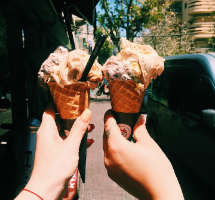

A Gato Gelado é uma sorveteria localizada em São Paulo (SP), que tem como objetivo encaminhar para famílias responsáveis gatos retirados das mais diversas situações de risco.

Gatinhos para adoção
Leco
- Macho
- Olhos verdes
- Laranja
- Nascimento: 09/2020
- Resgatado em: 02/2021
Morei um tempo numa escola, mas não dava para curtir o recreio, porque era uma escola de crianças e gatinhos não eram bem-vindos. Com isso, cresci sem ter muito contato com as pessoas, o que me fez ser um gatinho lindo, mas apavorado. Então, quando conheço gente, no começo, preciso de paciência, pq ainda sou desconfiado, mas tenho melhorado muito, claro que posso regredir um pouco na sua casa, mas se você souber entender isso vai passar, as tias te ajudam com dicas. Eu preciso ser adotado por alguém que more numa casa sem cachorros nem crianças, pois posso ser muito defensivo e assustar esses parceirinhos. Estou castrado e vacinado, e sou negativo para FIV e FeLV.
Meu nome é Kim. Fui resgatada debaixo de uma barraca de melancia, de um lugar onde os gatinhos eram usados apenas para servir interesses humanos, por isso passei a desconfiar das pessoas. Não sabia o que era amor. Minha defesa era parecer brava. Fui para a casa da tia da ONG e só depois de muita paciência ela viu meu outro lado. Fiquei muito doce. Comecei a gostar de colo e de companhias humanas e felinas. Quero ser adotada por alguém que tenha paciência para entender meu tempo e queira uma companheira fiel. É você? Sou castrada, vacinada e negativa para FIV e FeLV.
Kim
- Fêmea
- Olhos amarelos
- Cinza
- Nascimento: 10/2018
- Resgatado em: 03/2019
Zena
- Fêmea
- Olhos azuis
- Branca
- Nascimento: 08/2019
- Resgatado em: 06/2021
Sou a Zena! Fui resgatada grávida pelas tias da ong. Fui para em um lar temporário e tive meus quatro filhotes em segurança. Sou uma gatinha muito dócil e carinhosa. Adoro pessoas! Passei na fila da beleza algumas vezes! A tia me disse que pareço uma pintura e que meus olhos são lindos. Sou muito delicada e muito boazinha. Adoraria ter minha própria família e receber todo o amor que mereço. Se você quer uma gatinha dengosa e companheira, estou aqui e se quiser amor em dobro me adota com um dos meus filhos (Galak, Bono, Ferrero ou Nutella) Estou castrada, vermifugada, vacinada e sou negativa para FIV/FELV.
Como adotar?
Escolha um gatinho e venha fazer uma visita, caso você se encaixe nos critérios, um formulário com informações pessoais será preenchido e uma data será definida, após isso, no data escolhida, um voluntário levará o gato até a sua casa. Antes de soltar o gatinho, ele verificará se a sua casa é segura. Se estiver tudo de acordo, o gatinho é solto!